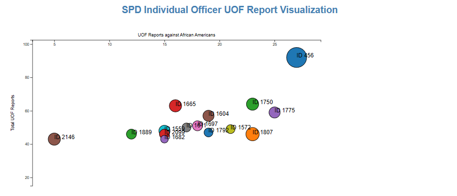

SPD Individual Officer UOF Report Visualization

Created by Theodore Dyer - Visualization of Seattle Police Department Use of Force Reports
Circle Radius: Factor of an officer's UOF Reports Per year
Files Submitted:
- scatterindex.html
- scatterplot.js
- scatterstylesheet.css
- scatterdata.csv
- scatterplot.pdf
Sources:
https://observablehq.com/@d3/zoomable-scatterplot https://bl.ocks.org/mbostock/db6b4335bf1662b413e7968910104f0f/e59ab9526e02ec7827aa7420b0f02f9bcf960c7d
bl.ocks.org/mbostock/3892919
http://www.puzzlr.org/zoom-in-d3-v4/
https://tomroth.com.au/zoom-minimal/
Starter code provided by Suresh Lodha - CSE 163 Spring 2020